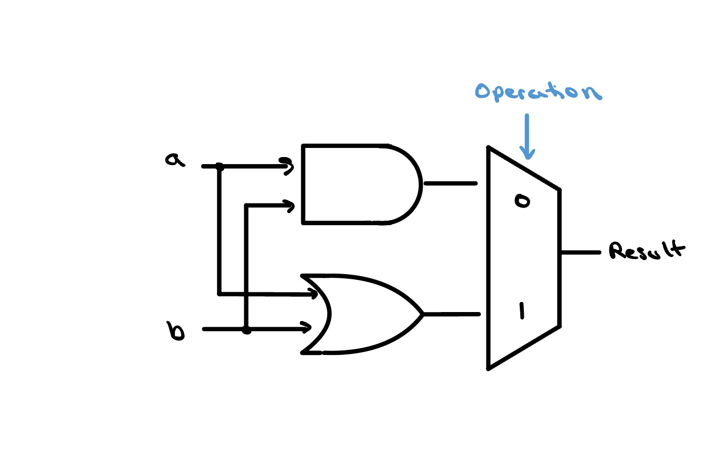
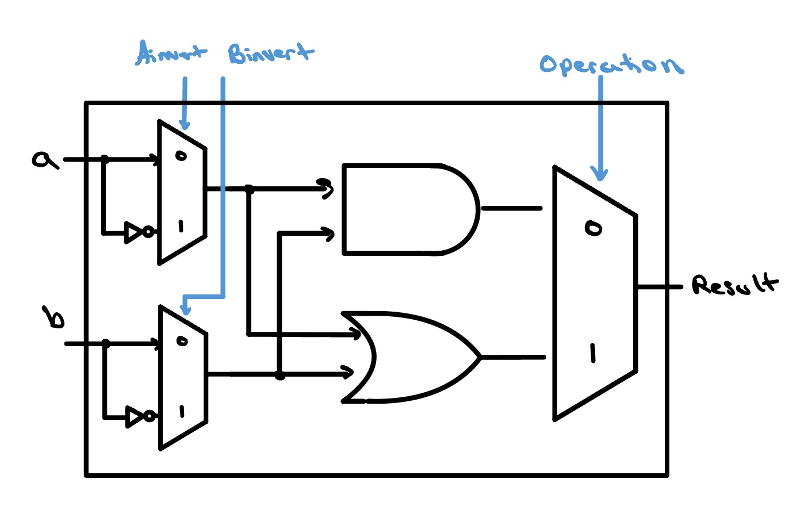
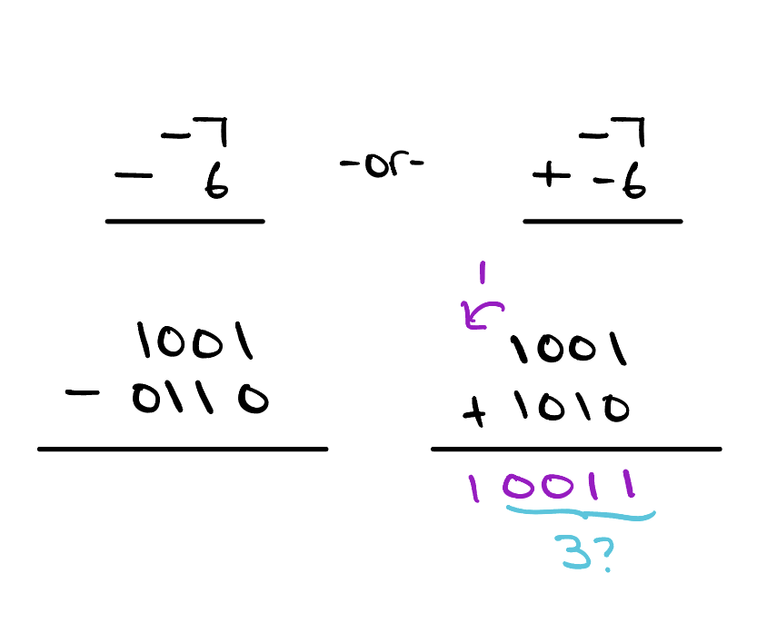

The 32-bit ALU Slice
A single ALU slice handles just one bit — a couple of logic gates, an adder, and a multiplexer that picks which result to keep. Stack thirty-two slices side by side, chain each carry into the next, and you have a complete 32-bit ALU.

Ground Zero


Back in the Logic Gates lesson, we built our very first ALU, and it
was about as simple as an ALU can get. The two inputs a
and b fed an AND gate and an OR gate side by side, and a
single 2×1 multiplexer — steered by an
operation bit — picked which of those two results
to send out as the Result. One control line, two
operations, but a real, working ALU nonetheless.
One of the first upgrades we can make is the ability to
invert either input before it reaches the gates — to
feed in a or its complement, and likewise for
b. Since that's a choice between exactly two things (the
input or its inverted version), the most straightforward way to build
it is with another 2×1 multiplexer on each
input. We run each input through a NOT gate to produce its inverted
twin, wire both the original and the inverted signal into a 2×1
mux, and add a control line — Ainvert for the
a side and Binvert for the b
side — to select which one actually enters the AND and OR gates.
Set the control to 0 and the input passes straight through; set it to
1 and its inverted version takes its place.
Addition Incoming
The next upgrade is the one that finally lets our ALU do arithmetic:
we drop a full adder into every slice. A full adder
never works alone, though — each bit's sum depends on the carry
rippling in from the bit before it. By putting in the full adder, we
have introduced another input, Cin, and another
output Cout, to each slice.
You also may notice that we've added an input to our multiplexer. Instead of a 2×1 multiplexer, it is now a … 3×1 multiplexer?
As soon as we increase the number of inputs in a multiplexer beyond
two, a single control bit is no longer enough. We need at least
two control bits to select which path is transmitted
to the output. With two bits, we technically have the ability to choose
from any one of four inputs, and every additional bit we add to the select
signal, the amount of inputs we can choose from increases by a power of
2. For simplicity, in our image we've only drawn
the three inputs we actually use; the fourth is left out because it
could technically be anything, so long as our operation bits never take
on the value 11. A situation like this — where an
input's value genuinely doesn't matter — is called a
don't care, and is usually written as an
x.

The Final Upgrade
We are now just one operation away from our final ALU slice: the
set-less-than, or slt, operation. This
operation gives a result of 1 (true) if a
is less than b, and 0 (false) otherwise.
It is important to note that both results are still a full 32-bit
number (i.e. 000…01 and
000…00). We can leverage two neat tricks to
simplify the hardware needed to compute it:
-
If
a<b, that would mean thata−b< 0. In other words, to test whetherais less thanb, we subtractbfromaand compare the result with zero. -
Recall that in two's complement, the most significant bit is the
sign bit of the 32-bit number. If
a−b< 0, our result from subtractingbfromais negative, soResult's most significant bit would be 1. We can route that single bit down to the least significant slice to set our result to 1. And in case you were wondering — ifa−b≥ 0,Resultis positive, its most significant bit stays 0, and the least significant bit is never set, leaving 000…00.
Because of these two tricks, our datapath stays quite simple. We
have added an input, less, to each slice, and are now
making use of the fourth input of the 4×1 mux. Additionally,
we have added an output, set, but only to the most
significant slice, where a little extra overflow-detection logic
produces it. As you can see, the set signal carries the
result of adding the most significant bits together. We'll see in the
next lesson how this signal is routed together with the other 31
slices to create our fully functioning ALU.

One Last Thing…

Before we move on, I thought this would be the perfect time to mention one
small detail that we must include in our overflow-detection unit. The way
we have organized our hardware, the slt operation works by
evaluating a − b and comparing that result to
0. One subtlety to this way of doing things is that there is a
chance that we could overflow during that subtraction, and
our ALU would report a corrupted, flat-out wrong answer — the overflow
quietly poisons our result, flipping its sign so the comparison comes out
exactly backwards from the truth.
For example, suppose we are working with a 4-bit word size in two's complement interpretation. If we wanted to compare −7 (1001) with 6 (0110), we would have to perform −7 − 6, or more simply −7 + (−6). After doing this operation, our intuition tells us that something is off; we cannot store the number −13 in a 4-bit, two's complement number — we can only go as low as −8.
So what will our ALU do? Well, our ALU will take the lowest 4 bits for its
result and interpret our result as a 3! Now, if we think back
to what we said earlier, the slt operation will output
1 if and only if a − b < 0, but as we see
here 3 < 0… How do we handle this? Think about how
you would handle this first, and if you need some help, check out
the alu_msb.v file on GitHub.
Check Yourself
Suppose you wanted to add the operations NAND and NOR to this
ALU slice.
How could you change the ALU to support it?